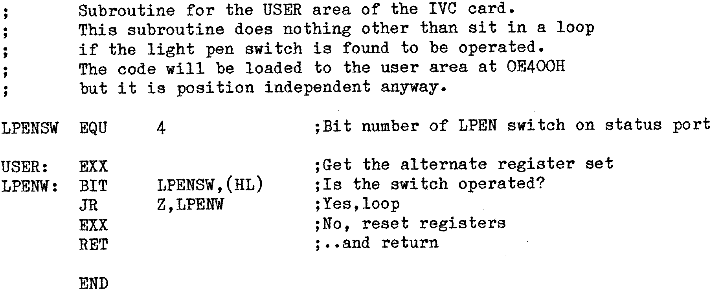

80-Bus News |
July–October 1982 · Volume 1 · Issue 3 |
| Page 20 of 51 |
|---|
Note: Example 3 has used Microsoft’s MBASIC in a CP/M environment. Other versions of Basic may be used in a similar way, but the syntax may need adjusting to suit. (eg The Nascom version of Basic supports only a single USR function which is accessed in a slightly different way). The same technique may be employed in other langauges, the exact approach to take depending upon the way the language executes. If there is a poll of the keyboard inbetween statements (as in the Basic interpreter), then the machine code subroutine approach will be necessary, otherwise the direct port access (WAIT/INP etc) can be used satisfactorily.
This example is in fact an extension to example 3, and uses the ESC L and ESC U commands to provide a “single shot” operation of the light pen switch. This is done by downloading a very short program to the IVC and calling it before requesting (or after reading) the light pen coordinates. What the routine does to sit in a loop until the switch on the light pen is released, and so the switch has to be released before another pair of coordinates can be read.
Try adding the above subroutines to the code of example 3. Also include
125 GOSUB 3000
2015 PRINT CHR$(27);"U"; :REM Do ESC U. (ie Hang up until
he/she lifts his/her finger).
These are only suggestions – take and develop as you see fit.
| Page 20 of 51 |
|---|